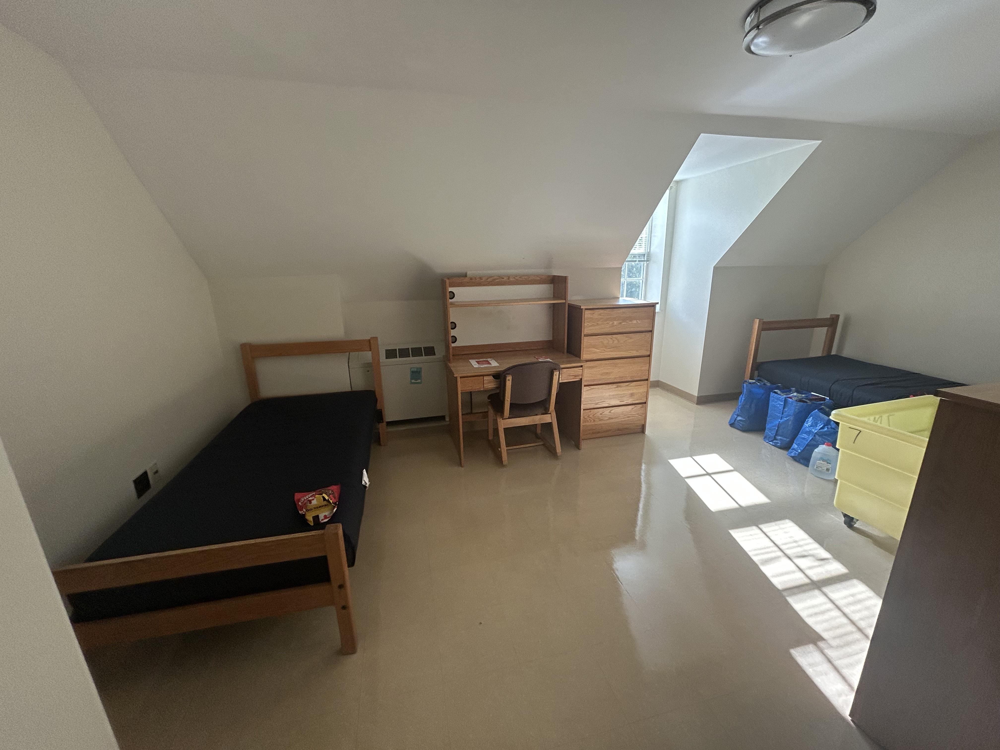
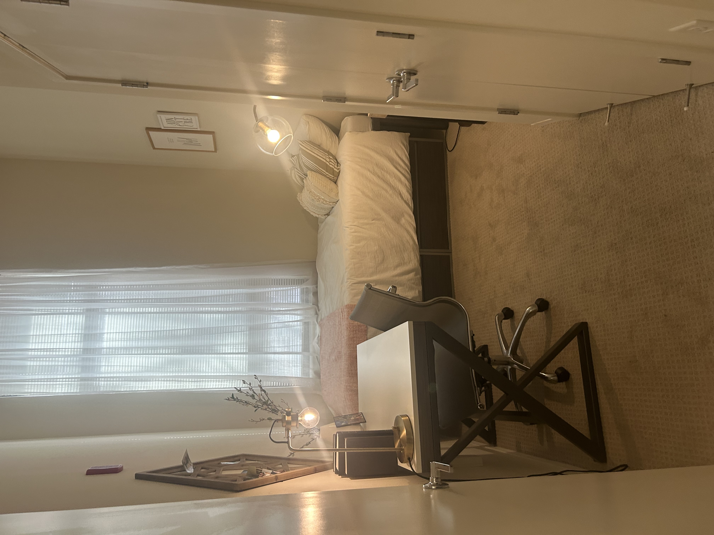

When sophomore communications and art history major Lily Bolles checked her email three weeks before her fall semester classes, the message she waited for all summer arrived: she had been offered on-campus housing.
But the message had come too late. Bolles, who transferred to the University of Maryland that semester, had already signed a lease agreement in early July. She said she applied for housing in early May and the university placed her on a waiting list.
“If I knew that I was likely going to get offers in housing, then I probably would have waited longer on an apartment and lived on campus,” Bolles said.
Other students share a similar experience, primarily upperclassmen, who do not receive guaranteed on-campus housing. The university’s policy guarantees on-campus housing for freshmen and sophomores, but juniors and seniors are often placed on waiting lists or turn to off-campus housing options.

Image of Queen Anne's Hall dorm room
Credit: Charlotte Sutton

Image of Terrapin Row apartment bedroom
Credit: Charlotte Sutton
The Department of Resident Life recommends that students move to UMD-affiliated apartments or off-campus housing properties during the third or fourth year, when students often seek more independence, according to a spokesperson at the Department of Resident Life.
Roxana Vasquez, a sophomore marketing major who commutes to campus, said she assumed that “the seniority of being here as an upperclassman would grant you…an upper hand in getting housing.”
“It’s not fair that upperclassmen aren’t guaranteed housing,” Vasquez said. “You’re trying to finish school and now you’re not guaranteed it anymore.”
About 39% of students at the university have housing options that the university owns, operates, or is affiliated with, while about 61% of students live off campus, according to data from the U.S. News & World Report.
Sophomore undecided business major James Sanchez Diaz, who also commutes to campus, said the Department of Resident Life does a good job outlining options, but could better explain them.
Some students said renovations to Ellicott and Hagerstown halls may have affected the room selection process for underclassmen next school year.
Ellicott Hall will be closed during the fall 2026 semester to undergo renovations, including electrical upgrades, new windows and improved bathroom fixtures, according to a department spokesperson.
The university plans similar renovations for Hagerstown Hall in 2027.
Freshman journalism major Marissa Beahm said she expects incoming freshmen to face challenges securing on-campus housing next school year due to the renovations. Beahm said she initially struggled during the room selection process despite receiving an early selection time.
The spokesperson stated that Ellicott Hall’s closure didn’t significantly impact students’ room selection process and that a majority of eligible students successfully chose an on-campus space. The spokesperson stated that the department aimed to provide all interested first-year students with housing. Enrollment of first-time students rose by about 7% compared with last year.
Angelina Andreano, a sophomore English major, said she plans to live on campus next semester since she will be studying abroad. Andreano, who lives in an apartment with Bolles, said she will have to sublease her space and that living on campus would be more convenient during her semester abroad.
Bolles suggested that the university have a numbered waitlist to accommodate students who aren’t guaranteed on-campus housing and send emails about their housing status to help them prepare for alternative housing options.
The department communicates with students through email campaigns, social media posts, and information on its website and the university’s housing portal, according to a spokesperson from the department.
“I wish it was more centralized,” Beahm said about the department’s website. “Because I have to go through a lot of searches to find this one specific fact that I wanted to know.”